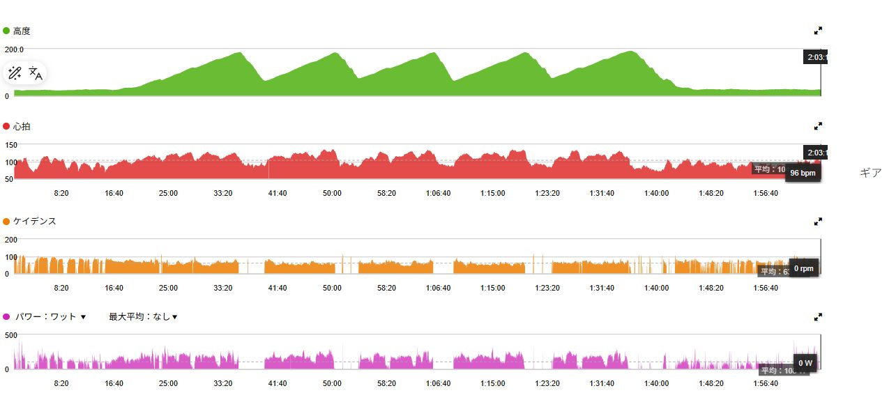

友人と話しながら唐沢5本。誰かと練習できるのが幸せと感じる
今日は友人と唐沢を5本走ってきた。登りでは少し踏むものの、基本は会話できる強度。タイムもパワーも揃えず、ただ一緒に走った。
最近はゴルビーやSSTなど数字を追う練習が続いていた。だからこそ、こうして話しながら走る時間がいつも以上に楽しかった。

唐沢5本でも今日は会話ペース
「唐沢5本」と書くと、それなりにきつそうに見える。でも今日は登りで少し踏み、下りでしっかり休み、また話しながら登る流れだった。呼吸は大きく乱れず、心拍も平均104bpmに収まった。
走行時間は2時間ほどで獲得標高は660m。TSSも62.2あるため完全な休養ではない。それでも身体への負担は穏やかで、運動量を確保しながら友人との時間を楽しめる強度だった。
高強度、MTB、そして低強度ベース走
2日前は友人2人と唐沢ゴルビー5本。雨上がりの路面とパンク修理を挟みながら5分×5本を完遂した。昨日は近場をMTBで約10km走り、強度を抑えて身体を動かした。
そのため今日はゴルビー翌日の回復走ではなく、1日軽めの日を挟んだ低強度ベース走になる。高強度を続けずに運動量は保つ。結果としてちょうどいい一日になった。

数字を見ると軽い。でも意味はある
平均パワー108W、NP152W、IF0.552。75kg基準のNPは約2.03W/kgで、無酸素TEは0.0だった。数字だけを見ても今日は明確に低強度である。
一方で2時間走り、坂を5本登っている。脚を動かしながら低強度の有酸素運動を積めたので、何もしていない日ではない。軽いまま終えられたこと自体が今日の狙いに合っていた。
数字を追わない日の価値
最近は何ワット出たか、何分維持できたか、前回より伸びたかをよく見ている。富士ヒルゴールドを目指すなら必要なことだと思う。ただ、ずっと数字だけを追っていると、自転車に乗る理由まで数字になりそうになる。
今日は誰かと話しながら同じ坂を何度も登った。大きな出来事はない。それでも楽しく、こういう時間の方が後から強く残るのだと思う。
友人と走れる時間が幸せだった
速くなりたいし、富士ヒルでゴールドも取りたい。でも自転車の価値は結果だけではない。一緒に走れる友人がいて、同じ道を走り、休憩しながら話せる。それを楽しいと思えることも大切にしたい。
高強度の日も、一定出力を我慢する日も必要である。ただ毎回すべてを練習にしなくていい。今日は自転車を楽しむ日だった。この時間が幸せなのだと改めて感じられた。
刺激としては穏やかでも満足度は高かった。こういう日があるから高強度の日も続けられる。数字を追わない時間はトレーニングの邪魔ではなく、自転車を長く楽しむために必要な時間なのかもしれない。
富士ヒルゴールドを目指す過程には、追い込んだ記録だけでなく今日のような日も残しておきたい。友人とのライドはやっぱり楽しい。それが今日の一番の収穫だった。
自分用メモ
- 内容友人と会話ペースで唐沢5本
- 全体31.95km / 2時間3分 / 660mアップ
- 負荷平均108W / NP152W / IF0.552 / TSS62.2
- W/kg75kg基準でNP約2.03W/kg
- 心拍平均104bpm / 最大136bpm
- 気温平均28℃ / 最高35℃ / 推定発汗量約950ml